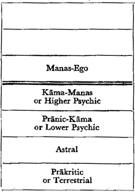
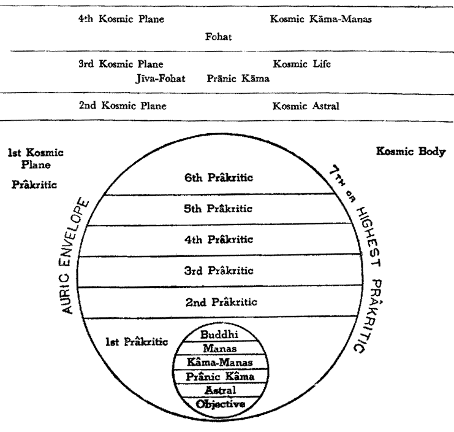
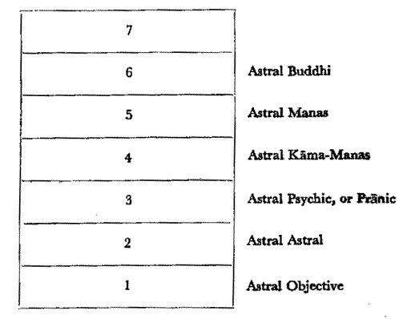

Madame Blavatsky's cosmology is nothing if not elaborate. As with her cycles and subcycles of cosmic evolution, she has planes and subplanes of being, a fractal ontological spectrum of innumerable divisions, comparable to the elaborate theosophies of Gnosticism and Kabbalah, but actually deriving from the "Cosmic philosophy" and classifications of Max Theon.
The most complete diagrammatic representation of this cosmology occurs not in The Secret Doctrine or any of her other important works, but in a collection of notes on some of her lectures [see "Notes on Some Oral Teachings", appended to the back of vol. 5 of the 1971 Adyar Edition of The Secret Doctrine; pp.524ff]. As unfortunately seems to be the case with a number of occult and spiritual teachers (and perhaps philosophers in general), in their short accounts of things they are extremely clear, but once they start writing things in book form the whole thing becomes lost in a tangle of words.
The seven "Kosmic Planes" and states of Kosmic consciousness H. P. Blavatsky's original diagram are represented as follows:

The first three planes of ineffable Absolute, the Alaya (unmanifest), and (for the 5th Kosmic Plane) Mahat (Logos) and Mulaprakriti (Root-Substance), are not labelled here, for as she explains:
"Believing in seven planes of Kosmic being and states of Consciousness, with regard to the Universe or the Macrocosm we stop at the fourth plane, finding it impossible to go with any degree of certainty beyond..."[The Key to Theosophy p.90]
Hence the following account of the first three planes and higher principles is speculative, and purely by analogy with the corresponding processes on the lower planes. Interestingly the Neoplatonist Proclus used a similar approach when describing his "unknown Gods" (henads).
Either as the seventh Kosmic Plane, or perhaps beyond all of the primary planes is the level of the Parabrahm or Parabrahman, there is "the One Reality, the Absolute, the field of Absolute Consciousness" [The Concise Secret Doctrine p.11]. In other words, the unmanifest Absolute Reality. This manifests first as the impersonal and unmanifest Logos [Ibid, p.12], the Alaya (the universal "store-consciousness" of Yogachara), the "soul of the world" or "the Over-Soul" (Emerson) which "though eternal and changeless in its inner essence...alters during the active life-period with respect to the lower planes, ours included" [Ibid. p.26]. This would seem to be the 6th Kosmic [using here Blavatsky's preferred spelling] Plane, the Unconscious Godhead.
"Once we pass...from this (to us) Absolute Negation, duality supervenes in the contrast of Spirit (or consciousness) and Matter, Subject and Object." Spirit and Matter are not independent realities, but "the two facets or aspects of the Absolute," which are the basis of conditioned subjective and objective being [Ibid p.11].
From "this metaphysical triad as the Root" of "all manifestation, the great Breath assumes the character of (Cosmic or) pre-cosmic Ideation", the "Divine Thought", Mahat, the origin and "root of all individual consciousness", and "the guiding intelligence in the vast scheme of cosmic Evolution." This is the 5th Kosmic Plane. The other aspect of the Absolute becomes the Cosmic or Pre-cosmic Root-substance or Mulaprakriti, "the substratum of matter in the various grades of its differentiation", and a term taken from Indian Samkya.
These two are dependent on each other, in that "apart from Cosmic Substance, Cosmic Ideation could not manifest as individual consciousness" a physical basis or vehicle (upadhi) being necessary for self-consciousness. And "apart from Cosmic Ideation, Cosmic Substance would remain an empty abstraction." [Ibid pp.11-12]. This is of course pure Tantra (the polarity of Shiva and Shakti).
Blavatsky however suggests a third principle which in this context, to my knowledge is not part of the Tantric or Indian tradition (despite her and subsequent theosophists claim to the contrary), linking these two elements together. This is Fohat, the "dynamic energy of Cosmic Ideation," "the "bridge" by which Ideas existing in the "Divine Thought" are impressed on Cosmic Substance as the "laws of nature"." Although this would seem to be at least partially equivalent to the general Tantric term of Shakti, the power of manifestation, a better equivalent would be the Holy Spirit of esoteric Christians like Jacob Boehme.
In Blavatsky's schema, Fohat is located on the 4th Kosmic Plane. Through the medium of Fohat, the "Divine Thought" is "transmitted and made manifest through the Dhyan Chohans, the Architects of the visible World." [Ibid p.12]. The Fourth Kosmic Plane is the highest of which any certain knowledge is possible, the upper three (as stated previously) being ineffable [The Key to Theosophy p.90], "the Divine and Formless World of Spirit" [An Abridgement of the Secret Doctrine, p.94]
Kosmic Plane number three is defined as Kosmic Life or Jiva-Fohat; this would presumably be the level at which the first spiritual essences or individualities, the Jivas or Manads, appear, and a scaled down version of the Fourth or Fohat Plane.
The following, Second Kosmic Plane, called the "Kosmic Astral", is a transitional stage between the higher cosmic-divine planes, and the lowest or "Prakritic" plane.
Madame Blavatsky presents a diagram showing the representation of the planes and subplanes as follows:

Again, the ineffable higher planes are not shown here. It also has to be pointed out that each of the Kosmic planes should properly be drawn as the same size. The lowest or prakritic (first kosmic) plane is only shown larger in order to represent the subplanes within it.
This diagram, like much of Blavatsky's cosmology, is actually based on Theon's representation of planes and subplanes, and many of the terms are directly equivalent. the difference is that Theon taught in French, and used a jargon in that language (albeit, as Mirra reported, a "barbarous" French), whereas Blavatsky drew from Sanskrit, a language much more amenable to metaphysical cosmology. Nevertheless H. P. Blavatsky's application of Vedantic terms is used for states of consciousness quite unrelated to those of original Vedanta, Samkhya, and Mahayana Buddhism (popular opinions to the contrary notwithstanding).
This can be shown in the following table:
|
Max Theon |
H. P. Blavatsky |
| The Cause without Cause | Parabrahman |
| 1st World - Occultisms (beyond attainment of humanity at present) | 7th Kosmic Plane 6th Kosmic Plane - Alaya - or Oversoul (unmanifest) 5th Kosmic Plane - "Divine Thought" or Mahat |
| 2nd World - Pathotisms | 4th Kosmic Plane - Fohat and Kosmic
Kama-Manas 3rd Kosmic Plane - Kosmic Life or Pranic Kama 2nd Kosmic Plane - Kosmic Astral |
| 3rd World - Etherisms | |
| 4th Veil | 7th Prakritic Plane (auric envelope) |
| 4th World - Materialisms consisting of 7 or 8 subplanes |
1st Kosmic Plane - Prakriti - Kosmic Body consisting of 6 Prakritic planes plus auric envelope |
As H. B. Blavatsky's writings and ideas were progressively adapted and modified by her successors like the Adyar Theosophists, Rudolph Steiner, Alice Bailey, and others, the original meaning became progressively modified and simplified.
As with all the planes, the First or lowest Kosmic Plane, the Terrestrial or Prakritic - "Prakriti" being the Indian term for psycho-physical substance - which includes the various physical, psychic, and spiritual levels, is in turn divided into seven planes; the highest being unknowable and hence unspecified. Theon's term for these planes was "Materialisms", but "Prakriti" is more appropriate, since prakriti can include all phenomenal reality, including mind and intellect, and not just matter.
For Blavatsky, the above seven Prakritic planes (sub-divisions of the First Kosmic or Prakritic Plane) are the sphere of evolution of all the solar systems [p.529]. Sri Aurobindo used the term "terrestrial evolution", and this is partially equivalent (but not completely, as for Auroibindo and Mirra it only encompassed the Earth)
The same pattern of Kosmic planes is repeated on a lower scale. Hence we have here what Gurdjieff termed "octaves": each plane is divided into a similar series of subplanes, and so on. This is a common theme throughout much of Western esoteric thought, beginning with Kabbalah but especially being popularised by Theosophy.
The higher six of the prakritic planes are not described, although, in keeping with the law of correspondences that is central to Blavatsky's cosmology, the upper three would be planes of formless Spirit, and the lower four more material in nature. The lowest of these, the Objective or Terrestrial or First Prakritic plane (counting from below), includes the phenomena with which we are the most familiar, including the seven principles of man.
..............................
7. Para-Ego or Atmic
..............................
6. Inner-Egoic or Buddhic
..............................
5. Ego-Manas
..............................
4. Kama-Manas or Lower Manas
..............................
3. Pranic Kama or Psychic (instinct)
..............................
2.Astral (things are reversed)
..............................
1. Objective (plane of the senses)
..............................
Each of these is of course sub-divided into seven. Only with three of the planes are the subdivisions specified.
1. Objective
2. Astral
4. Kama-Manas
In H. P. Blavatsky's formulation he objective or sensuous plane these are as follows [p.525]:
THE OBJECTIVE PLANE:
7. x
6. Spiritual-emotional
5. Mental-emotional
4. Passional-emotional
3. Physiological-emotional
2. Instinctual
1. Sensuous
These terms pretty much speak for themselves. The first three represent consciousness tied up with the body, and can be compared with divisions of somatic consciousness in Gurdjeff and Aurobindo. The following represent lower emotional body subdivisions. Strangely there is no mental body represented here (only the mental emotional). So:
| Blavatsky |
Gurdjieff/ Ouspensky |
Sri Aurobindo |
| 7. x | ? | ? |
| 6. Spiritual -emotional | ? | ? |
| 5. Mental -emotional |
Mental part of Emotional Centre |
Mental-Vital |
| 4. Passional -emotional |
Emotional part of Emotional Centre | Central Vital |
| 3.Physiological- emotional | Moving part of Emotional Centre | Physical Vital |
| 2. Instinctual | Instinctual Centre | Physical |
| 1. Sensuous | Moving | Physical |
With regard to the second, or Astral plane, regarding which, as is indicated previously, phenomena are reversed or inverted [p.526], the seven divisions are listed as follows:

The description regarding these subdivisions is the most detailed of all the planes mentioned here, and can be quoted in full:
"With regard to the first division of the second [Astral] plane...all seen on it must be reversed in translating it, e.g. with numbers which appeared backwards. [It] corresponds in everything to the Terrestrial Objective.
The second division corresponds to the second of the (Terrestrial)... plane, but the objects are of extreme tenuity, an astralised Astral. This plane is the limit of the ordinary medium...A non-mediumistic person to reach it must be asleep or in a trance, or under the influence of laughing gas; or in ordinary delirium...
The third, the Pranic, is of an intensely vivid nature. Extreme delirium carries the patient to this plane. In delirium tremens the sufferer passes to this and to the one above it. Lunatics are often conscious on this plane, where they see terrible visions. It runs to the fourth division, the worst of the astral planes, Kamic and terrible. Here come the images that tempt; images of drunkards in Kama Loka impelling others to drink; images of all vices inoculating men with the desire to commit crimes. The weak imitate these images in a kind of monkeyish fashion, so falling under their influence. This is also the cause of epidemics of vices, and cycles of disaster, of accidents of all kinds coming in groups...
The fifth division is that of premonition in dreams, of reflections from the lower mentality, glimpses into past and future, the plane of things mental and not spiritual. The mesmerized clairvoyant can reach this place...
The sixth is the plane from which come all beautiful inspirations of art, poetry, and music; high types of dreams, flashes of genius. Here we have glimpses of past lives, without being able to locate or analyse them.
We are on the seventh plane in the moment of death or in exceptional visions. The drowning man is here when he remembers his past life. The memory of events on this plane must be centred in the heart, "the seat of Buddha"...."
Here then we see a progression from quasi-physical to terrifying to increasingly spiritual. This was a theme retained by Leadbeater in his detailed and possibly Spiritualistically based descriptions of post-mortem existence and the ascent through the planes.
The nature of the third and fourth astral planes is also interesting. Most subsequent occult, theosophical, and New Age writers and teachers seem to refer to a "lower astral plane" which is the source of negative psychic phenomena, much like the sort of things Madame Blavatsky describes. Yet there is no reason to attribute the belief in the existence of this negative psychic zone solely to Blavatsky's teachings, as practically all pre-scientistic societies professed a belief in the existence of "evil spirits" and negative psychic forces (a surviving southern European example, denagrated as "superstition", is the belief in the "evil eye"). A study of folklore would uncover many examples of spells, charms, etc for the purpose of warding off such evil influences. But whereas materialism dismisses such things as "superstition", true occultism acknowledges all planes of existence as valid, negative as well as positive, each with its place in the overall scheme of things.
After the detail of the Astral plane, it is disappointing that (at least in the surviving notes) Blavatsky neglects to describe the other five "Terrestrial" planes. However, reference is made to "consciousness proper" which begins between Kama (Fourth plane) and Manas (5th plane) [p.530]. This is divided into six categories (again, the first principle, presumably representing the Absolute, is left unmentioned): Objective, Astral, Kama-Pranic, Kama-Manasic, Manasic, and Buddhic Consciousness [pp.530-532]. The Kama-Manasic Consciousness is divided into seven degrees, presumably representing the seven sub-planes of the Kama-Manasic plane:
"The instinctual consciousness of animals and idiots in its lower degrees, the planes of sensation; in man these are rationalised....The highest degree...is the psychic. Thus there are seven degrees from the instinctual animal to the rationalised instinctual and psychic" [Ibid, p.531].
Pervading through the various planes is what Blavatsky elsewhere terms (following Eliphas Levi) the Astral Light.
The cosmic vision of Planes beyond Planes presented here emphasises the tremendous vastness of manifested reality. It recalls the Hellenistic Gnostic theme of innumerable orders of Aeons (Worlds and Deities) between the unmanifest Source and the Created Cosmos (Blavatsky's 1st (lowest) Prakritic plane). Yet there is a danger here because the planes are listed, but all the details and sub-divisions are poorly related, if at all. So the whole thing is not very workable. It is all very well to talk about planes and Kosmic Planes, but unless these levels can be related with something specific - particular states of consciousness, or hierarchies of spiritual beings, for example - they become meaningless. This seems to be the problem with the six higher prakritic planes for example.
Yet in spite of these limitations, Blavatsky's cosmological sequence of planes is still quite comprehensive, and represents a valid parallel of the Tradition received and formulated by the Theons. Especially in conjunction with the Qabalistic order of sefirot, can be used to help identify various levels of reality at the Prakritic level.